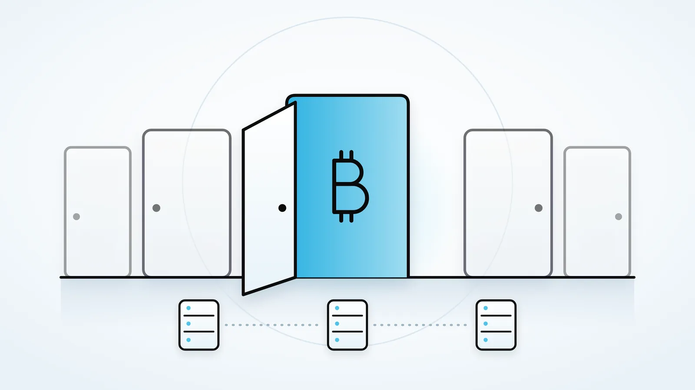
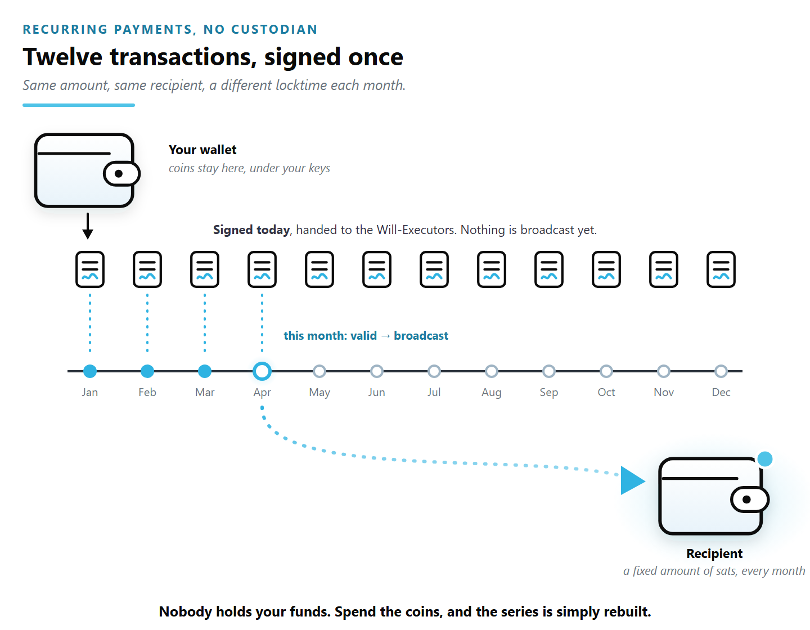

When people discover Bitcoin After Life, they usually describe it the same way: "the inheritance plugin for Electrum". That is true. It is also the smallest possible way to describe it.
The plugin is the first door. Behind it there is a Bitcoin inheritance protocol that does not know what an inheritance is, a network of servers that do one simple thing very well, and a set of possibilities we are only beginning to build. This article is about what is behind the door.
What the protocol actually is
Strip Bitcoin After Life down to its parts and you find three of them.
The first is a transaction you sign today that cannot be used until a date you choose. Bitcoin has supported this for years through the locktime field; the network simply refuses the transaction until the time comes. Nothing exotic, no new opcodes, no sidechain: we wrote about that choice in Why We Built BAL as an Electrum Plugin.
The second is a network of independent servers, the Will-Executors, that hold your signed transaction and broadcast it the moment it becomes valid. They do not control it. They cannot change it. They cannot spend it early, because the network would reject it.
The third is Bitcoin itself, which decides when the transaction is valid, and makes sure that only one version of it can ever be spent.
None of the three knows about the others, and none of them knows what the transaction is for. The plugin is what assembles them for one specific purpose: making sure your heirs receive your coins on a date you set. The protocol underneath is indifferent to that purpose. A time-locked transaction, held by a server and broadcast on time, is a general tool. Inheritance is just the first thing we built with it.
What a Will-Executor really does
A Will-Executor does three things. It receives a signed transaction. It keeps it. When the locktime passes, it broadcasts it, and if its broadcast is the one that confirms, it collects the fee written inside the transaction.
That is the whole job. A Will-Executor does not see your balance, does not hold a key, does not know your name, and cannot tell whether the transaction it holds is a will, a gift or a payment. We described exactly what it can and cannot see in What Can a Will-Executor Actually See?.
This simplicity is not a limitation. It is the point. A server that does one thing, and needs to know nothing about who is asking, can serve any wallet, any interface and any service built on top of the protocol. It does not need to be updated when a new use appears, because it never understood the old one.
Bitcoin recurring payments without a custodian
Here is one of those new uses.
Imagine you want to send a fixed amount of sats every month to a child who is studying abroad. Or pay a rent. Or support a project you believe in, for a year, without having to remember it twelve times.
Today the honest options are poor. You can do it by hand every month, and forget. You can leave the coins with a service that pays on your behalf, and give that service your keys, your balance and your trust. Or you can give up and use the banking system.
The protocol offers a fourth way. You sign twelve transactions today: the same amount, the same recipient, each one with a different locktime, one per month. You hand them to the Will-Executors. Then you do nothing. Each month, one transaction becomes valid, a server broadcasts it, and the sats arrive.
Notice what did not happen. Nobody held your funds: the coins stayed in your wallet, under your keys, until each payment was due. Nobody could change the amount or the recipient, because every transaction was already signed. Nobody could stop a payment except you, by spending the coins it depends on, which is exactly how a will is cancelled today. And if you do spend those coins for something else, the plugin rebuilds the remaining series the next time you close Electrum, the same way it keeps an inheritance current.

The same pattern turns an inheritance into something gentler. Instead of a single delivery on a single day, a will can be split into instalments: a part every year, for as long as you choose. For an heir who has never handled bitcoin, receiving it gradually is often safer than receiving it all at once.
We want to be precise about the status of this. The protocol already allows it; the interfaces that make it simple are being built, and are not public yet. We mention it here because it shows what the protocol is, not to announce a product.
More doors are opening
The Electrum plugin was the first interface, and it is listed among the external plugins on the Electrum Wallet plugins page. BAL Easy Heirs was the second: an app built not by us but by independent developers who believe in the BAL protocol, for the person on the receiving end. Other wallets and services are now being developed on the same protocol, again by others who have already started writing apps for it, because the protocol is open and nobody needs our permission to use it.
Every one of those doors leads to the same room. Whatever interface signs the transaction, it is the same kind of transaction, held by the same Will-Executors, broadcast by the same rule. A server that joined the network to serve inheritances will serve recurring payments, instalments, and whatever comes next, without changing a line.
Why running a Will-Executor is a bet on the whole protocol
Today a Will-Executor broadcasts inheritance transactions. By their nature those are rare: a will executes once, years after it was signed.
Recurring payments change the arithmetic. A single user setting up a monthly payment produces twelve transactions a year. An inheritance paid in instalments produces one a year for a decade. Each of those transactions carries a fee for the server that broadcasts it first, paid in bitcoin, only on success. The more that is built on the protocol, the more transactions pass through the Will-Executors, and the more there is to earn for the servers that are there, reliable, and quick.
The servers that are there first also gain something that cannot be bought later: a track record. Users choose their Will-Executors from welist, and a server that has been broadcasting on time for years is the one people pick. How to run one, and what it costs, is in Run a Will-Executor.
Two invitations
The protocol has no owner. It is a way of using Bitcoin that anyone can adopt.
If you run infrastructure, run a Will-Executor. The work is small, the role is honest, and every new use of the protocol increases what it earns.
If you build software, build a door. The plugin is one way in; it will not be the last. A wallet that signs time-locked transactions and hands them to Will-Executors is already a Bitcoin After Life client, whether or not we ever hear about it.
The inheritance plugin is how most people will meet the protocol. It is not where the protocol ends.
Bitcoin After Life is open source and Bitcoin-only. Explore the plugin and the server on Gitea and read the full manual at bitcoin-after.life/docs.